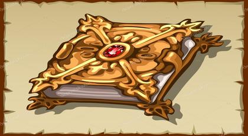

Sihirli Yakut

Vaktiyle bir nehir kenarındaki mermerden yapılmış bir şatoda çok güzel bir prenses oturuyormuş. Bu çok zenginmiş. Nehrin geçtiği bütün yerler onunmuş. Bu kızla kim evlenmek istediyse kız herkes tarafından geri çevrilmiş. Çünkü prenses evleneceği kimsenin büyük bir kahraman olmasını arzu ediyormuş.
Bir gece şatosunun balkonunda otururken çok uzaklarda bulunan bir dağın tepesindeki yıkık bir binanın, birden bire aydınlandığını görerek hayret etmiş ve hizmetçilerden birini çağırmış.
Prenses :
- O harabe aydınlandı, acaba içinde oturanlar mı var? diye sormuş.
Hizmetçi :
- Her sene paskalyadan bir gece evvel, orası aydınlanır. Birçok cüce gelip, toprakları kazarlar, orada gömülü olan yakut taşını ararlar, demiş.
Prenses de bu taşı aratmak istediğini söylemiş. Hizmetçi bu cücelerin hainliğinden uzun uzadıya söz etmişse de prensesi kararından caydıramamış. Bunun üzerine her tarafa prensesin evlenmek arzusunda olduğu duyurulmuş. Bu nedenle yabancı ülkelerden birçok ve birçok zengin aile çocuğu oraya gelmişler. Prenses onlara sihirli yakutu kim getirirse onunla evleneceğini söylemiş. Taliplerden kimi bu işi göze alamayıp geri dönmüşler. Paskalya`da bir gün evvel, silahlı ve yakışıklı bir genç gelip bu işe gönüllü olduğunu söylemiş. Bu gence karşı kalbinde bir sevgi uyanan prenses sevinçle ona :
- Oraya gitmenin ne kadar tehlikeli olduğunu biliyor musunuz? diye sordu.
Genç:
- Biliyorum ama arzunuzu yerine getirmek için bu tehlikeye hazırım, demiş.
Bunun üzerine prenses :
- Şartımdan vazgeçtim, zira benim yüzümden tehlikeye atılmanıza razı değilim, der.
Genç :
- İltifatınıza teşekür ederim, ama oraya gitmezsem size hayat arkadaşı olmaya layık olamam, der.
Cesur genç atıyla hemen yola çıkıp aydınlanmış harabelerin önüne gelmiş. Birdenbire cüceler onu kuşatmışlar. Bunlar ellerinde sivri kazmalar olduğu halde pire gibi sıçrıyorlarmış. Cüceler bu genci tutup içeriye götürerek, şeflerinin huzuruna çıkarmışlar.
Şef, gence :
- Burada ne arıyorsun? Hiç işitmedin mi ki buraya gelen sağ çıkmaz, fakat korkma ben yiğitlerden hoşlanırım. Burada uzun araştırmalardan sonra, bu defa bulabildiğiniz fevkalade bir yakutu sana göstereyim :
- Şu bardağı da al, içinde buradaki kaynaktan alınan saf bir su var; bunu içersen dostumuz olursun, der.
Cesur genç :
- Taşı iyice göreyim, suyu sonra içeyim, der.
şef yakutu vermiş, sonra bardağı uzatmış. Genç suyu içeceği zaman kulağına :
- Bu zehirdir, sakın içme ve hemen buradan uzaklaş, diye bir ses gelmiş.
Bu söz üzerine genç hemen bardağı atıp, atına bir kamçı indirmiş ve kuş gibi uçup prensesin yanına giderek, yakutu ona vermiş. Biraz sonra şatoya bir kaç cücenin geldiğini haber vermişler. Prensesle cesur genç onları görmek için kuleye çıktıklarında, cücelerden biri onlara :
-Yakutuu verin yoksa size büyük bir kötülük yaparız, diye bağırmış.
Prenses de ona :
- Yakutu bana kahraman bir şovalye vermiştir, diye cevap vermiş.
Bu sözler söylenir söylenmez, yakuttaki sihir kuvvetiyle harabenin kayaları şiddetle sarsılarak bütün harebe nehre yuvarlanmış ve içindekilerin bir kısmı taşların altında ezilerek, bir kısmı da nehirde boğularak ölmüşler.
Prenses bu yakutu gerdanına takmış ve bu cesur gençle de evlenerek mesut ve bahtiyar olmuş.